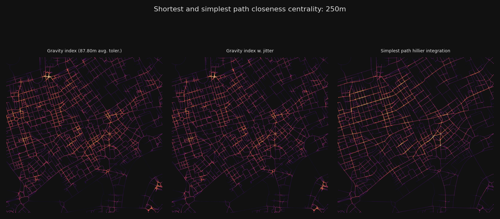
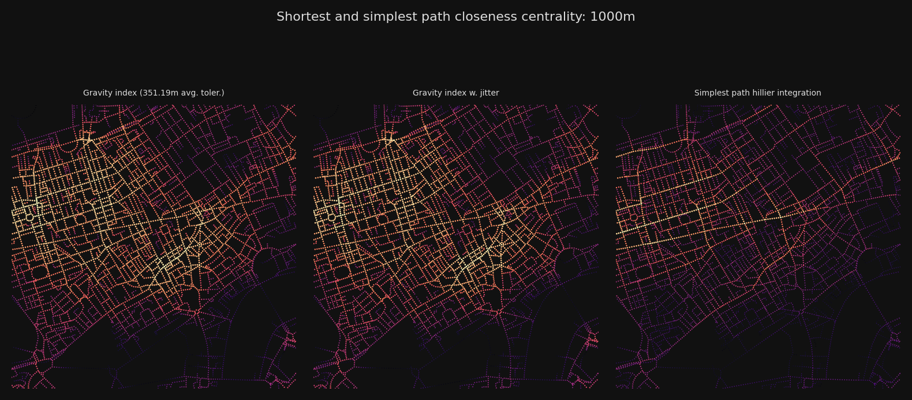
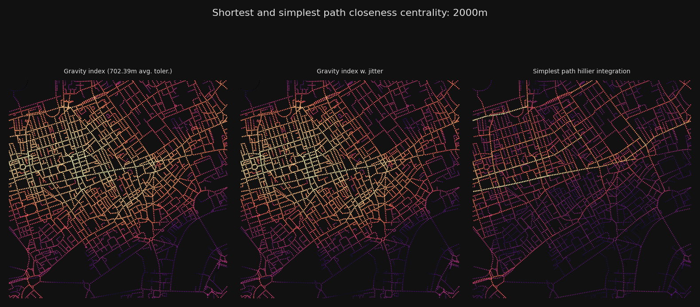
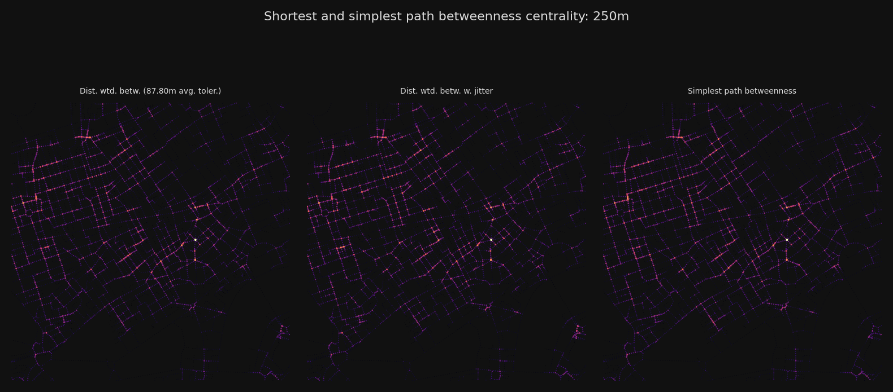
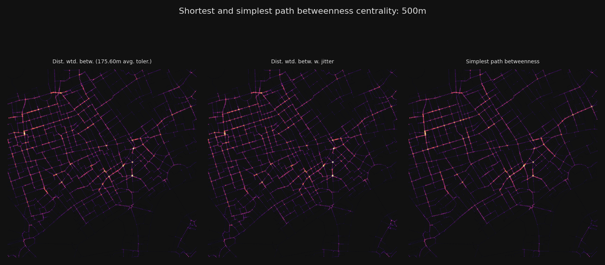
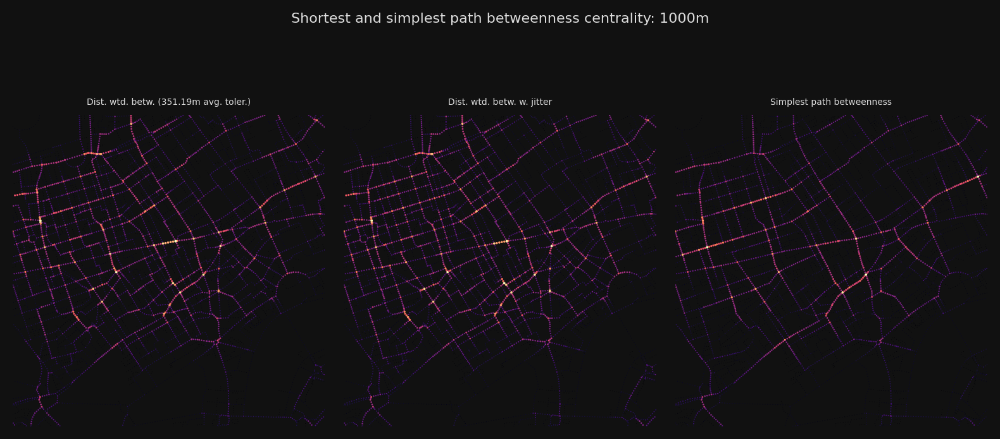
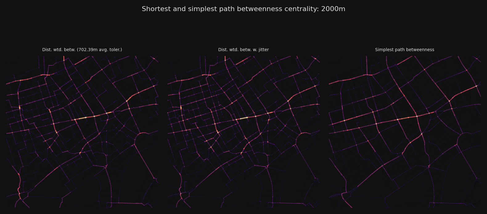

# !pip install --upgrade cityseerLondon Centralities
Install and update cityseer if necessary.
Data Source
The following example uses the OS Open Roads dataset, which is available under the Open Government License.
Preparation
The following example assumes:
- That the notebook is being run from a cloned
cityseer-apirepository. - That the above dataset has been downloaded to
temp/os_open_roads/oproad_gb.gpkgas a relative path. If running this notebook directly from within a clone of thecityseer-apirepo, then this equates to thecityseer-api/temp/os_open_roads/oproad_gb.gpkgpath. Please edit the paths and path setup in this cell if you are using different directories.
from pathlib import Path
repo_path = Path.cwd()
if str(repo_path).endswith("examples"):
repo_path = Path.cwd() / ".."
if not str(repo_path.resolve()).endswith("cityseer-examples"):
raise ValueError(
"Please check your notebook working directory relative to your project and data paths."
)
open_roads_path = Path(repo_path / "temp/os_open_roads/oproad_gb.gpkg")
print("data path:", open_roads_path)
print("path exists:", open_roads_path.exists())data path: /Users/gareth/dev/benchmark-urbanism/cityseer-examples/examples/../temp/os_open_roads/oproad_gb.gpkg
path exists: TrueExtents
Instead of loading the entire dataset, we’ll use a bounding box to only load an area of interest.
from pyproj import Transformer
from shapely import geometry
from cityseer.tools import graphs, io
# bbox setup
lng, lat = -0.13396079424572427, 51.51371088849723
buffer_dist = 5000
distances = [250, 500, 1000, 2000]
plot_buffer = 1500
# transform from WGS to BNG
transformer = Transformer.from_crs("EPSG:4326", "EPSG:27700")
easting, northing = transformer.transform(lat, lng)
# calculate bbox relative to centroid
centroid = geometry.Point(easting, northing)
target_bbox: tuple[float, float, float, float] = centroid.buffer(buffer_dist).bounds # type: ignore
plot_bbox: tuple[float, float, float, float] = centroid.buffer(plot_buffer).bounds # type: ignoreLoad
We can now load the OS Open Roads dataset and convert it to a format that can be used by cityseer for downstream calculations.
# load OS Open Roads data from downloaded geopackage
G_open = io.nx_from_open_roads(open_roads_path, target_bbox=target_bbox)
# decompose for higher resolution analysis
G_decomp = graphs.nx_decompose(G_open, 25)
# prepare the data structures
nodes_gdf, _edges_gdf, network_structure = io.network_structure_from_nx(
G_decomp, crs=27700
)INFO:cityseer.tools.io:Nodes: 18193
INFO:cityseer.tools.io:Edges: 24189
INFO:cityseer.tools.io:Dropped 430 edges where not both start and end nodes were present.
INFO:cityseer.tools.io:Running basic graph cleaning
INFO:cityseer.tools.graphs:Removing filler nodes.
100%|██████████| 18193/18193 [00:00<00:00, 34807.56it/s]
INFO:cityseer.tools.graphs:Merging parallel edges within buffer of 10.
100%|██████████| 22578/22578 [00:00<00:00, 67829.11it/s]
INFO:cityseer.tools.graphs:Decomposing graph to maximum edge lengths of 25.
100%|██████████| 22516/22516 [00:14<00:00, 1585.65it/s]
INFO:cityseer.tools.io:Preparing node and edge arrays from networkX graph.
100%|██████████| 75794/75794 [00:00<00:00, 96996.81it/s]
100%|██████████| 75794/75794 [00:11<00:00, 6749.52it/s]Calculate centralities
The centrality methods can now be computed.
from cityseer.metrics import networks
# if you want to compute wider area centralities, e.g. 20km, then use less decomposition to speed up the computation
nodes_gdf = networks.node_centrality_shortest(
network_structure=network_structure,
nodes_gdf=nodes_gdf,
distances=distances,
)
nodes_gdf_jitter = nodes_gdf.copy(deep=True)
nodes_gdf_jitter = networks.node_centrality_shortest(
network_structure=network_structure,
nodes_gdf=nodes_gdf_jitter,
distances=distances,
jitter_scale=10,
)
nodes_gdf = networks.node_centrality_simplest(
network_structure=network_structure,
nodes_gdf=nodes_gdf,
distances=distances,
)INFO:cityseer.metrics.networks:Computing shortest path node centrality.
100%|██████████| 75794/75794 [03:26<00:00, 367.92it/s]
INFO:cityseer.metrics.networks:Computing shortest path node centrality.
100%|██████████| 75794/75794 [02:33<00:00, 493.78it/s]
INFO:cityseer.metrics.networks:Computing simplest path node centrality.
100%|██████████| 75794/75794 [02:34<00:00, 490.22it/s]Plots
Let’s plot a selection of distance thresholds for each of the computed measures.
import matplotlib.pyplot as plt
from cityseer import rustalgos
from cityseer.tools import plot
bg_colour = "#111"
betas = rustalgos.betas_from_distances(distances)
avg_dists = rustalgos.avg_distances_for_betas(betas)
bg_colour = "#111"
text_colour = "#ddd"
font_size = 5
for d, b, avg_d in zip(distances, betas, avg_dists):
fig, axes = plt.subplots(1, 3, figsize=(8, 4), dpi=200, facecolor=bg_colour)
fig.suptitle(
f"Shortest and simplest path closeness centrality: {d}m",
fontsize=8,
color=text_colour,
)
plot.plot_scatter(
axes[0],
network_structure.node_xs,
network_structure.node_ys,
nodes_gdf[f"cc_beta_{d}"],
bbox_extents=plot_bbox,
cmap_key="magma",
face_colour=bg_colour,
)
axes[0].set_title(
f"Gravity index ({avg_d:.2f}m avg. toler.)",
fontsize=font_size,
color=text_colour,
)
plot.plot_scatter(
axes[1],
network_structure.node_xs,
network_structure.node_ys,
nodes_gdf_jitter[f"cc_beta_{d}"],
bbox_extents=plot_bbox,
cmap_key="magma",
face_colour=bg_colour,
)
axes[1].set_title(f"Gravity index w. jitter", fontsize=font_size, color=text_colour)
plot.plot_scatter(
axes[2],
network_structure.node_xs,
network_structure.node_ys,
nodes_gdf[f"cc_hillier_{d}_ang"],
bbox_extents=plot_bbox,
cmap_key="magma",
face_colour=bg_colour,
)
axes[2].set_title(
f"Simplest path hillier integration", fontsize=font_size, color=text_colour
)
plt.tight_layout()
plt.show()
for d, b, avg_d in zip(distances, betas, avg_dists):
fig, axes = plt.subplots(1, 3, figsize=(8, 4), dpi=200, facecolor=bg_colour)
fig.suptitle(
f"Shortest and simplest path betweenness centrality: {d}m",
fontsize=8,
color=text_colour,
)
plot.plot_scatter(
axes[0],
network_structure.node_xs,
network_structure.node_ys,
nodes_gdf[f"cc_betweenness_{d}"],
bbox_extents=plot_bbox,
cmap_key="magma",
s_max=2,
face_colour=bg_colour,
)
axes[0].set_title(
f"Dist. wtd. betw. ({avg_d:.2f}m avg. toler.)",
fontsize=font_size,
color=text_colour,
)
plot.plot_scatter(
axes[1],
network_structure.node_xs,
network_structure.node_ys,
nodes_gdf_jitter[f"cc_betweenness_{d}"],
bbox_extents=plot_bbox,
cmap_key="magma",
s_max=2,
face_colour=bg_colour,
)
axes[1].set_title(
f"Dist. wtd. betw. w. jitter", fontsize=font_size, color=text_colour
)
plot.plot_scatter(
axes[2],
network_structure.node_xs,
network_structure.node_ys,
nodes_gdf[f"cc_betweenness_{d}_ang"],
bbox_extents=plot_bbox,
cmap_key="magma",
s_max=2,
face_colour=bg_colour,
)
axes[2].set_title(
f"Simplest path betweenness", fontsize=font_size, color=text_colour
)
plt.tight_layout()
plt.show()






